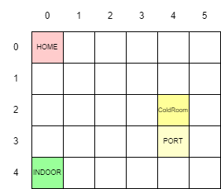
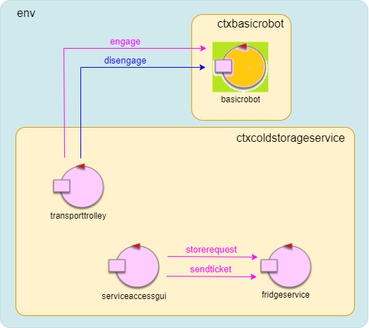

Introduction
Questo documento contiene lo sprint0 del progetto per il tema finale del corso.Requisiti
I requisiti del sistema da creare possono essere trovati in TemaFinale23.
Analisi dei requisiti
Analizzando i requisiti del problema e dopo ulteriori colloqui con il committente possiamo dire che:
Il servizio ColdStorageService è un processo difficilmente modellabile come un semplice oggetto, per via della sua complessità. Una migliore
rappresentazione ci è data dal concetto di attore, ovvero un ente logicamente attivo capace di inviare e ricevere messaggi in un contesto distribuito. Il
concetto di attore ci è reso disponibile sottoforma di software dal committente (si veda QakActors23 per maggiori informazioni),
che fornisce un modello per realizzare actors (Actors23, Actors23FSM) e interazioni tra di essi.
Gli attori non hanno memoria condivisa e interagiscono tra di loro solo attraverso scambi di messaggi, che possono essere:
- dispatch: un messaggio inviato a un preciso destinatario senza attesa di una risposta (in modo detto anche fire-and-forget).
- request: un messaggio inviato a un preciso destinatario aspettandosi da parte di questi una reply logicamente correlata alla richiesta.
- event: un messaggio inviato a chiunque sia in grado di elaborarlo.
class ServiceArea {
public int L1, L2, L3, L4;
};
Il ColdRoom container è anch'esso rappresentato come una cella della service area, con cui il DDR robot può collidere (è quindi un ostacolo). MAXW è una costante del ColdStorageService e indica la quantità massima di cibo depositabile. Il sistema avrà una variabile
{kind=link}
float currentlyStored per indicare la quantità di cibo al momento depositata nella ColdRoom.
La ColdRoom è caratterizzata da una porta di ingresso PORT, rappresentata come una cella della griglia adiacente ad essa.
Un DDR robot è un robot che possiede due ruote motrici sullo stesso asse e una terza ruota condotta (non motrice). Il committente fornisce un servizio con cui è possibile interfacciarsi
col robot che sia fisico o virtuale (si veda BasicRobot23 per ulteriori informazioni). Il servizio è realizzato ad attori ed ha la seguente
architettura:
Attraverso messaggi di request e dispatch è possibile ingaggiare il robot e farlo muovere nell'area o effettuare piani di mosse. Il Transport trolley è un componente proattivo del sistema che interagisce con il robot tramite l'interfaccia basicrobot23, ed è pertinente modellarlo come un actor. La HOME è anch'essa una cella della rappresentazione a griglia della service area. Il Fridge truck è un'entità esterna al sistema che interagisce con il ColdStorageService tramite l'interfaccia ServiceAccessGUI Il food load è espresso in kilogrammi ed è un parametro della deposit request. Una deposit action è una sequenza di azioni che il Transport trolley esegue quando prende in carica una richiesta di deposito. I requisiti non forniscono dettagli che ne permettono un'immediata formalizzazione e quindi sarà necessario analizzare questa azione nell'analisi del problema, in quanto si devono gestire le problematiche del far muovere il robot e farlo andare nelle determinate aree. Il ServiceAccessGUI è il componente del sistema che permette a un utente esterno (Fridge truck driver) di interagire con il sistema. Ha quindi la necessità di inviare e ricevere messaggi ed è opportuno (almeno per questa prima fase di analisi) modellare anche questa entità come un actor, per permettere la simulazione delle azioni svolte dal driver e per effettuare dei primi test sul sistema. In particolare, la ServiceAccessGUI invia richieste al ColdStorageService che possono essere formalizzate come
Request storerequest : storerequest(FW),
dove FW è il peso in kilogrammi del food load che si vuole depositare. Si nota che a questa richiesta possono corrispondere due tipi
di risposte (modellabili come reply) da parte del servizio: richiesta accettata con ritorno di un ticket Reply loadaccepted : loadaccepted(TICKET); oppure
richiesta rifiutata Reply loadrejected : loadrejected(_). Il sistema terrà conto in una variabile dell'orario di emissione del ticket, che scadrà
dopo un tempo di TICKETTIME secondi che è uguale per ogni ticket ed è un'informazione data preventivamente all'utente.
La GUI avrà un campo di input che permette al driver di inviare la richiesta e uno per inviare il ticket quando il driver è nella INDOOR (oltre a un campo
per visualizzare la variabile storedKG di sistema).
Il requisito della ServiceStatusGUI va trattato in maniera simile alla ServiceAccessGUI, in quanto deve poter ricevere messaggi
dal sistema e permettere a un utente esterno (il Service-Manager) di visualizzare informazioni. E' quindi opportuno modellarlo (almeno inizialmente), come un attore.
Per quel che riguarda gli Alarm Requirements, il Sonar e il Led sono dispositivi fisici per i quali il committente fornisce software di supporto nell'utilizzo
(RaspBasicCode, RaspApplCode ). Il sonar deve essere utilizzato come alarm device
e il led come warning device. Come per il Transport trolley con il DDR robot, è possibile definire questi due componenti come un attore posto in
un contesto esterno al sistema, che utilizza i dispositivi fisici associati. La distanza DLIMIT sarà quindi una costante dell'attore.
Non essendoci chiarezza su chi deve stoppare o far ripartire il trolley non è possibile, almeno in questa fase, formalizzare queste azioni.
Analisi delle User Stories
"A Fridge truck driver uses the ServiceAcessGUI to send a request to store its load of FW kg. If the request is accepted, the driver
drives its truck to the INDOOR of the service, before the ticket exipration time TICKETTIME."
"When the truck is at the INDOOR of the service, the driver uses the ServiceAccessGUI to enter the ticket number and waits until the message
charge taken (sent by the ColdStorageService) appears on the ServiceAcessGUI. At this point, the truck should leave the INDOOR."
transport trolley reaches the INDOOR, picks up the food, sends the charge taken message and then goes to the ColdRoom to store the food."
Si noti che il driver deve arrivare alla INDOOR in tempo, questo significa che se inserisce il ticket nella ServiceAccessGUI dopo
la scadenza, la richiesta deve essere rifiutata dal sistema. Quindi la ServiceAccessGUI invierà una richiesta
Request sendticket : sendticket(TICKET)
al ColdStorageService alla quale corrisponderanno due possibili risposte: Reply ticketrejected : ticketrejected(_) in caso
di ticket scaduto e Reply chargetaken : chargetaken(TICKET) proveniente dal transport trolley in caso di accettamento.
Quando il ColdServiceStorage accetta un ticket, il transport trolley deve essere informato tramite un messaggio che
al momento viene modellato come un Dispatch takecharge : takecharge(TICKET).
"When the deposit action is terminated, the transport trolley accepts another ticket (if any) or returns to HOME."
Il trolley deve avere la possibilità di accettare un nuovo ticket se presente, mentre deve tornare a casa se non ci sono richieste. Questo requisito ha bisogno di un'analisi più
approfondita e verrà quindi trattato in seguito.
"While the transport trolley is moving, the Alarm requirements should be satisfied. However, the transport trolley should not
be stopped if some prefixed amount of time (MINT msecs) is not passed from the previous stop."
Anche questo requisito verrà affrontato successivamente, perchè c'è bisogno di fare chiarezza sul chi deve stoppare il robot e su come stopparlo/farlo ripartire.
"A Service-manager migtht use the ServiceStatusGUI to see:
- the current state of the transport trolley and it position in the room;
- the current weigth of the material stored in the ColdRoom;
- the number of store-requests rejected since the start of the service."
Come gli ultimi due, anche questo requisito verrà affrontato successivamente, perchè bisogna pensare a come tenere aggiornato il ServiceStatusGUI con le
informazioni necessarie.
Modello del sistema
Dall'analisi sono scaturite diverse informazioni che ci permettono di realizzare un primo modello eseguibile del sistema. Come accennato precedentemente, per realizzare questo modello si può fare uso del software di modellazione fornito dal committente (QakActors23). Utilizzare questo software è vantaggioso poichè permette di creare in maniera rapida un prototipo eseguibile del servizio, fornendo strumenti e factory per creare attori e gestire le interazioni tra di essi (anche in nodi distribuiti). Gli attori sono modellati come automi a stati finiti (Actors23FSM), per la necessità di distinguere i messaggi che si vuole ricevere in un certo momento (stato) del sistema (e per evitare problemi con messaggi provenienti da più entità). Il modello ha la seguente architettuta:  Di seguito sono mostrati i messaggi utilizzati dal sistema:{kind=link}
// ----- Messaggi per le interazioni con il basic robot ------------
Request engage : engage(OWNER,STEPTIME) //richiesta di ingaggio
Reply engagedone : engagedone(ARG) //risposta di conferma di ingaggio
Reply engagerefused : engagerefused(ARG) //risposta di rifiuto di ingaggio
Dispatch disengage : disengage(ARG) //messaggio di disingaggio
//------------------------------------------------------------------
//-----------------------Messaggi applicativi-----------------------
Request storerequest : storerequest(KG) //richiesta di depositare un food load
Reply loadaccepted : loadaccepted(TICKET) //risposta di accettamento richiesta del load
Reply loadrefused : loadrefused(_) //risposta di rifiuto richiesta del load
Request sendticket : sendticket(TICKET) //messaggio per inviare il ticket al servizio
Reply chargetaken : chargetaken(_) // messaggio che invia il servizio per prendere in carico una richiesta
Reply ticketrefused : ticketrefused(_) //messaggio che invia il servizio se il ticket è scaduto
//------------------------------------------------------------------
Il sistema è composto da 4 attori posti in due contesti:
Il basicrobot è posto nel contesto ctxbasicrobot ed è fornito dal commitente, ed è quindi utilizzato nel sistema come attore esterno. Gli altri attori
sono invece posti nel contesto ctxcoldstorageservice
La serviceaccessgui è inizialmente modellata come un attore che simula le interazioni del fridge truck driver con il sistema
per permettere di effettuare test sul corretto funzionamento dei componenti e loro interazioni.
Il componente transporttrolley è modellato come segue:
L'attore firdgeservice è modellato come segue:
Il modello eseguibile del ColdStorageService realizzato si può trovare nel progetto sprint0Model
QActor serviceaccessgui context ctxcoldstorageservice{
State so initial{
println("$name - START") color magenta
}
Goto sendRequest
State sendRequest{
delay 3000
println("$name - Sending store request: 30 Kg") color magenta
request fridgeservice -m storerequest: storerequest(30)
}
Transition t0 whenReply loadaccepted -> sendTicket
whenReply loadrefused -> endWork
- Dopo essere partito da uno stato iniziale s0, la serviceaccessgui entra nello stato di sendRequest, dove dopo un'attesa per assicurarsi che il resto del sistema sia partito, invia una richiesta di deposito al fridgeservice con l'informazione sul peso nel payload. Successivamente, l'attore attende una risposta che può essere di accettazione o rifiuto della richiesta.
State sendTicket{
onMsg( loadaccepted : loadaccepted(TICKET) ){
println("$name - Moving to the INDOOR") color magenta
delay 2000 //simulating driver taking time to go to indoor
[# val Ticket="${payloadArg(0)}" #]
println("$name - Sending ticket: $Ticket") color magenta
request fridgeservice -m sendticket: sendticket($Ticket)
}
}
Transition t0 whenReply chargetaken -> endWork
whenReply ticketrefused -> endWork
- Se la richiesta viene accettata dal sistema, si passa allo stato sendticket, nel quale si simula lo spostamento del driver nella INDOOR e l'inserimento del ticket nel sistema. Fatto questo si invia la richiesta di sendticket al fridgeservice (inviando nel paylod il ticketnumber)che la elaborerà e risponderà con un messaggio di chargetaken se il ticket viene accettato, o con ticketrefused se il ticket è scadudo. Si noti che questo messaggio sarà modificato nell'analisi del problema in quanto i requisiti non chiariscono chi nel sistema debba effettivamente rispondere alla richiesta.
State endWork{
onMsg( loadrefused : loadrefused(_) ){
println("$name - END WORK: load got refused") color magenta
}
onMsg( ticketrefused : ticketrefused(_) ){
println("$name - END WORK: ticket got refused") color magenta
}
onMsg( chargetaken : chargetaken(_) ){
println("$name - END WORK: food load taken") color magenta
}
}
- In base alle risposte ricevute, l'attore entrerà nello stato finale di endWork nel quale si stampa il motivo di fine lavoro.
QActor transporttrolley context ctxcoldstorageservice{
State s0 initial{
println("$name - START, engage basicrobot") color green
request basicrobot -m engage: engage(transporttrolley,330)
}
Transition s0 whenReply engagedone -> waitRequest
State waitRequest {
println("$name - waiting for a request...") color green
[# CommUtils.waitTheUser("$name Please HIT to send takeCharge ") #]
}
Goto moveToIndoor
- Nello stato iniziale s0, il trolley invia la richiesta di engage al basicrobot e attende la risposta di corretto ingaggio.
- All'arrivo della risposta, l'attore passa allo stato di waitRequest, dove attende una richiesta di incaricarsi il load da depositare. In questo primo prototipo questo passaggio è simulato dalla pressione di un tasto, perchè dai requisiti non è direttamente deducibile come ciò debba svolgersi, ed è quindi lasciato a una futura analisi. Dopo l'arrivo della richiesta, si passa allo stato moveToIndoor.
State moveToIndoor {
println("$name - taking charge of request") color green
println("$name - moving to Indoor") color green
delay 2000 //simulate moving to indoor
}
Goto loadTheCharge
State loadTheCharge{
println("$name - loading charge ...") color green
[# CommUtils.waitTheUser("$name load charge. Please HIT ") #]
}
Goto moveToColdRoom
State moveToColdRoom{
println("$name - moving to ColdRoom ...") color green
delay 2000 //simulate moving to coldroom
}
Goto storeTheCharge
State storeTheCharge{
println("$name - storing charge ...") color green
[# CommUtils.waitTheUser("$name storing charge. Please HIT")#]
}
Transition t0 whenTime 1000 -> moveToHome
- Nello stato moveToIndoor inizia la deposit action del trolley. Si simula il movimento del robot nella INDOOR, in quanto il reale movimento ha bisogno di un'ulteriore analisi.
- Nello stato loadTheCharge si simula il caricamento del food load con la pressione di un tasto.
- Nello stato moveToColdRoom si simula il movimento del robot nella PORT della ColdRoom.
- Nello stato storeTheCarge si simula il deposito del carico all'interno della
con la pressione di un tasto. Dopo un secondo, il robot va allo stato moveToHome.
State moveToHome{
println("$name - No more requests, moving to home ...") color green
delay 2000 //simulate moving to Home (will be changed with real movement)
}
Goto trolleyAtHome
State trolleyAtHome{
println("$name - trolleyAtHome ... ") color green
forward basicrobot -m disengage : disengage(transporttrolley)
delay 1000 //avoid to premature abort of connection
[# System.exit(0) #]
}
- Nello stato moveToHome si simula il movimento del robot alla HOME, lasciando la presa in carico di nuove richieste a una futura analisi.
- Nello stato trolleyAtHome il robot si trova nella HOME e invia il comando di disingaggio al robot, per poi chiudere il sistema.
QActor fridgeservice context ctxcoldstorageservice{
[#
val MAXW = 100 //max storable kg in the ColdRoom
val TICKETTIME = 20 //seconds of ticket validity
var CurrentlyStored : Float = 0f //kg stored in the ColdRoom
val openRequestList = mutableListOf?>()
var ticketValue = 0 //incrementing ticket value
#]
State so initial{
println("$name - START") color blue
}
Goto waitRequest
- Il firdgeservice tiene traccia di tutte le variabili di sistema. MAXW per indicare la quantità massima di cibo depositabile nella ColdRoom, TICKETTIME che indica la validità in secondi del ticket, CurrentlyStored per tenere traccia della quantità di cibo depositata, opernRequestList per salvare le richieste ancora aperte, ticketValue per ottenere numeri incrementali dei tickets.
- Dallo stato iniziale so il sistema passa allo stato di waitRequest dove attenderà l'arrivo di una richiesta.
QActor fridgeservice context ctxcoldstorageservice{
[#
val MAXW = 100 //max storable kg in the ColdRoom
val TICKETTIME = 20 //seconds of ticket validity
var CurrentlyStored : Float = 0f //kg stored in the ColdRoom
val openRequestList = mutableListOf<Triple<Int, Float, Long>?>()
var ticketValue = 0 //incrementing ticket value
#]
State so initial{
println("$name - START") color blue
}
Goto waitRequest
State waitRequest{
println("$name - waiting for requests...") color blue
}
Transition t0 whenRequest storerequest -> handleRequest
whenRequest sendticket -> handleTicket
- Il firdgeservice tiene traccia di tutte le variabili di sistema. MAXW per indicare la quantità massima di cibo depositabile nella ColdRoom, TICKETTIME che indica la validità in secondi del ticket, CurrentlyStored per tenere traccia della quantità di cibo depositata, opernRequestList per salvare le richieste ancora aperte, ticketValue per ottenere numeri incrementali dei tickets.
- Dallo stato iniziale so il sistema passa allo stato di waitRequest dove attenderà l'arrivo di una richiesta.
- Il sistema può attendere per i due tipi di richieste trovati nell'analisi dei requisiti. La storerequest per una richiesta di deposito che porterà allo stato handleRequest, e la sendticket per il controllo sull'inserimento del biglietto nel sistema, che porterà allo stato handleTicket.
State handleRequest{
onMsg(storerequest: storerequest(KG)){
if [# payloadArg(0).toFloat() < MAXW - CurrentlyStored #]{
[# val Ticket= ticketValue
ticketValue = ticketValue + 1
#]
println("$name - accepting request of ${payloadArg(0)} Kg, returning ticket: $Ticket") color blue
replyTo storerequest with loadaccepted : loadaccepted($Ticket) caller== serviceaccessgui
[# openRequestList.add(Triple(Ticket, payloadArg(0).toFloat() , System.currentTimeMillis())) #]
}
else {
println("$name - refusing request of ${payloadArg(0)} Kg (Not enough room) ") color blue
replyTo storerequest with loadrefused : loadrefused(_) caller== serviceaccessgui
}
}
}
Goto waitRequest
- Nello stato handleRequest, il fridgeservice controlla che il peso del food load della richiesta non sia superiore alla quantità depositabile. In caso affermativo si crea un biglietto e si invia la risposta di loadaccepted alla serviceaccessgui, e si salvano le informazioni relative alla richiesta (ticket number, kg, data di emissione) nella lista delle richieste attive. In caso negativo invece la richiesta viene rifiutata con la risposta loadrefused.
- Si noti che dopo che la richiesta è stata elaborata, sia in caso positivo che in caso negativo il sistema ritorna nello stato waitrequest, dove attenderà una nuova richiesta di deposito o di inserimento di un biglietto.
State handleTicket{
onMsg(sendticket: sendticket(TICKET)){
[#
val Ticket = payloadArg(0).toInt()
val request = openRequestList.find { it?.first == Ticket }
val elapsedTime = (System.currentTimeMillis() - request!!.third) / 1000 //elapsed time in seconds
val Kg = request.second //load of this request
#] //request with the ticket value of the sendticket payload
if [# elapsedTime <= TICKETTIME #]{
println("$name - accepting ticket $Ticket of request for $Kg Kg") color blue
replyTo sendticket with chargetaken : chargetaken(_) caller==serviceaccessgui
[# CurrentlyStored += Kg #]
println("$name - After the load, there will be $CurrentlyStored Kg out of $MAXW in the ColdRoom")
}
else{
println("$name - refusing ticket $Ticket of request for $Kg Kg (ticket expired)") color blue
replyTo sendticket with ticketrefused : ticketrefused(_) caller==serviceaccessgui
}
[# openRequestList.remove(request) #] //removing the request after we are done with it
}
}
Goto waitRequest
}
Goto waitRequest
- Nello stato handleTicket si estrapolano i dati della richiesta dalla lista delle richieste attive utilizzando il ticket inviato nel payload della richiesta, e si va a calcolare il tempo (in secondi) trascorso dall'emissione del biglietto. Se il tempo trascorso è minore o uguale di TICKETTIME il biglietto viene accettato e il sistema invia la risposta di chargetaken (provvisorio) alla serviceaccessgui, e si aggiorna la quantità di cibo depositata. Se invece il tempo trascorso è maggiore di TICKETTIME la richiesta viene rifiutata con la risposta ticketrefused. In entrambi i casi la richiesta viene eliminata dalla lista delle richieste aperte
- Si noti che dopo che la richiesta è stata elaborata, sia in caso positivo che in caso negativo il sistema ritorna nello stato waitrequest, dove attenderà una nuova richiesta di deposito o di inserimento di un biglietto.
Piani di testing
Concentrando l'attenzione solo sul modello del sistema realizzabile tramite l'analisi dei requisiti, possiamo pianificare alcuni test per verificare che il sistema funzioni correttamente. Per effettuare i test si è realizzata una variante del modello (Sprint0ModelTest.qak)in cui l'unica differenza è che la ServiceAccessGUI non invia nessun messaggio in maniera automatica (non simula l'interazione con il driver), in modo che possiamo usare un test class per inviare e ricevere messaggi- TestRequestAccepted: Test del normale funzionamento del sistema. Si invia una richiesta che non sfori il limite massimo della coldRoom e si verifica che il ticket venga accettato.
- La funzione getPayloadArgs serve solo per ricavare gli argomenti del payload dalla stringa di un messaggio.
- Prima di iniziare ogni test, il sistema viene fatto partire e si aspetta 5 secondi per permettere una completa inizializzazione.
- All'inizo del test si crea una connessione TCP con il contesto del ColdStorageService.
- Poi si crea e invia la richiesta storeRequest per un carico di 30kg, e si attende la risposta del sistema con il ticket da inserire.
- In seguito si aspetta una quantità di tempo (minore del tempo massimo per inserire un biglietto) per simulare l'arrivo nella INDOOR e si invia una nuova richiesta sendticket al sistema.
- Si asserta che l'id del messaggio ricevuto sia chargetaken.
- TestColdRoomFull: Dopo che il sistema ha ricevuto la richiesta storerequest, occorre verificare che la coldroom abbia spazio per caricare il load. In caso non ci sia spazio disponibile, il sistema deve ritornare la risposta loadrefused.
- All'inizo del test si crea una connessione TCP con il contesto del ColdStorageService.
- Poi si crea e invia la richiesta storeRequest per un carico di 200kg, e si attende la risposta del sistema.
- Essendo 200kg più della capacità della coldRoom ci si aspetta che l'id del messaggio ricevuto sia loadrefused.
- TestExpiredTicket: Dopo che il sistema ha ricevuto la richiesta sendticket, occorre verificare che il ticket non sia scaduto. Se è scaduto, il sistema deve ritornare la risposta ticketrefused.
- All'inizo del test si crea una connessione TCP con il contesto del ColdStorageService.
- Poi si crea e invia la richiesta storeRequest per un carico di 30kg, e si attende la risposta del sistema con il ticket da inserire.
- In seguito si aspetta una quantità di tempo (maggiore del tempo massimo per inserire un biglietto) per simulare l'arrivo nella INDOOR e si invia una nuova richiesta sendticket al sistema.
- Essendo il ticket scaduto, ci si aspetta che l'id del messaggio ricevuto sia ticketRefused.
fun getPayloadArgs(input: String?): List {
val regex = Regex("\\(([^)]+)\\)")
val matchResult = input?.let { regex.find(it) }
return matchResult?.groupValues?.get(1)?.split(',') ?: emptyList()
}
companion object {
@BeforeClass @JvmStatic
fun setup() {
it.unibo.ctxcoldstorageservice.main()
delay(5000)
}
}
@Test
fun testRequestAccepted() {
val conn: Interaction = ConnectionFactory.createClientSupport23(
ProtocolType.tcp, "localhost", "9990")
println("Sending store request of 30 kg")
val storeRequest: IApplMessage = CommUtils.buildRequest("testApplication", "storerequest", "storerequest(30)", "fridgeservice")
val storeReply: IApplMessage? = conn.request(storeRequest)
val ticket: String = getPayloadArgs(storeReply?.msgContent())[0]
println("Simulating going to indoor")
delay(4000)
val ticketRequest: IApplMessage = CommUtils.buildRequest("testApplication", "sendticket", "sendticket("+ticket+")", "fridgeservice")
val ticketReply: IApplMessage? = conn.request(ticketRequest)
//If everything goes as it should, it will be chargetaken
assertEquals("chargetaken",ticketReply?.msgId())
}
@Test
fun testColdRoomFull() {
val conn: Interaction = ConnectionFactory.createClientSupport23(
ProtocolType.tcp, "localhost", "9990")
println("Sending store request of 200 kg")
val storeRequest: IApplMessage = CommUtils.buildRequest("testApplication", "storerequest", "storerequest(200)", "fridgeservice")
val storeReply: IApplMessage? = conn.request(storeRequest)
//If the coldroom can't fit the load, it has to return loadrefused
Assert.assertEquals("loadrefused", storeReply?.msgId())
}
@Test
fun testTicketRefused() {
val conn: Interaction = ConnectionFactory.createClientSupport23(
ProtocolType.tcp, "localhost", "9990")
println("Sending store request of 30 kg")
val storeRequest: IApplMessage = CommUtils.buildRequest("testApplication", "storerequest", "storerequest(30)", "fridgeservice")
val storeReply: IApplMessage? = conn.request(storeRequest)
val ticket: String = getPayloadArgs(storeReply?.msgContent())[0]
println("Simulating going to indoor in 21 seconds")
CommUtils.delay(21000)
val ticketRequest: IApplMessage = CommUtils.buildRequest("testApplication", "sendticket", "sendticket("+ticket+")", "fridgeservice")
val ticketReply: IApplMessage? = conn.request(ticketRequest)
//If the tiket has expired, it should be ticketrefused
Assert.assertEquals("ticketrefused", ticketReply?.msgId())
}
Piano di lavoro
Tenendo conto anche delle considerazioni fatte in Sprint0v1.html, possiamo suddividere il lavoro nei seguenti sprint:- SPRINT1: Si sviluppa il core applicativo del sistema (si terrà conto delle userstories 1,2,3,4). Quindi si concentrano le risorse solo sulla realizzazione del FridgeService, del TransportTrolley e della ServiceAccessGUI. In particolare, si gestiranno i problemi del movimento del trolley e interazioni con basicrobot (e deposit action) e la gestione di richieste multiple. La parte di GUI della serviceAccessgui verrà ignorata in questo sprint e le interazioni con il TruckDriver saranno simulate dall'attore che modella la accessGUI. (Tempo previsto per la realizzazione: 2 giornate lavorative)
- SPRINT2: Si estende il sistema prodotto nello SPRINT1 realizzando la fase reattiva del robot, andando a realizzare il componente distribuito AlarmDevice, che interagisce col robot tramite messaggi di stop/resume, e modellando anche le azioni del warning device . (Tempo previsto per la realizzazione: 2 giornate lavorative)
- SPRINT3: Si sostituisce la ServiceAccessGUI realizzata come attore con una web application con interfaccia grafica, che interagisce con il sistema e permette al TruckDriver di inserire richieste e leggere le informazioni necessarie. (Tempo previsto per la realizzazione: 2 giornate lavorative)
- SPRINT4: Si conclude il progetto sviluppando la ServiceStatusGUI, per permettere al ServiceManager di visualizzare lo stato del sistema. (Tempo previsto per la realizzazione: 1 giornata lavorativa)